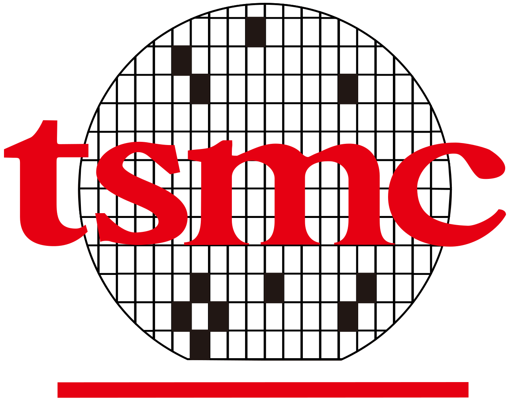
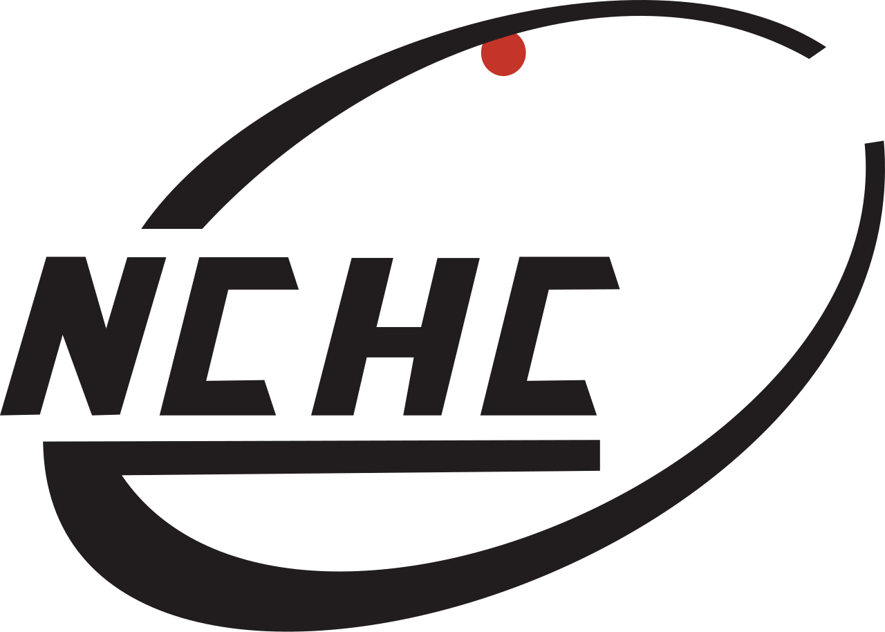

Work
Work Experience
This page highlights my industry experience including full-time and internship responsibilities.
Work Experience

Incoming Equipment Engineer
Responsible for manufacture equipment improvements.
Focus on technical improvement for new process application and system hardware development.
Assist to benchmark and formalize production tool roadmap.
Research Assistant
Assisting with the project of medical system using AI technologies.
Exploring and doing research on new topic of IC Design, AI, and Robotics.
Internship Experience

Summer Intern
Developed AI agent for remote computer control with AR glasses streaming via RTSP.
Trained UR10 robotic arm models for singularity-aware motion planning.
Publications: Conference paper accepted at TANET 2025 and NCS 2025.
Summer Intern
Managed IT infrastructure, social media, and provided technical support in Thai.
Repaired machines and designed factory fixtures.
Intern Consultant
Analyzed government AI policies and corporate digital transformation cases using the KPMG Connected Enterprise framework.
Applied Trusted AI frameworks (LIT, SHAP) to financial data and corporate XAI cases.